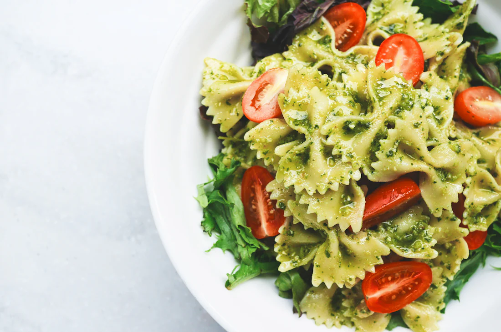
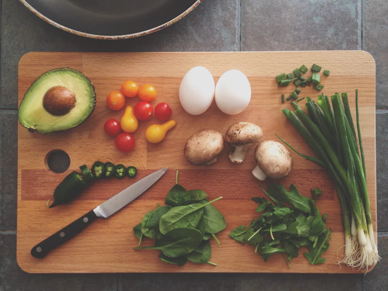
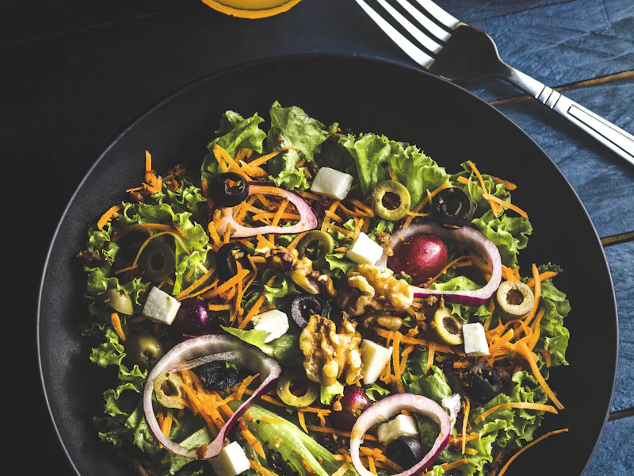

Restaurant · cuisine 100 % maison
Fleur de Thym
Cuisine maison à Thaon — 4,9, la meilleure note de la ville
- Tout fait maison
- Produits frais & de saison
- 4,9★ · 141 avis Google
- Midi mar-dim · soirs ven-sam
Votre table
Réserver en ligne
Petite salle, grande attention : réservez votre table en quelques secondes. Les créneaux proposés suivent nos services réels.
100 % maison
La carte
Une cuisine franche et soignée, tout est préparé maison à partir de produits frais. La carte change au fil des saisons et du marché.


Les artisans de la maison
Alicia & Benjamin
Une cuisine portée par deux passionnés, où tout se fait maison.
Aux fourneaux et en salle, Alicia & Benjamin font vivre Fleur de Thym avec une idée simple : une cuisine maison, des produits frais et un accueil sincère. Une carte courte qui change avec les saisons, des plats préparés à la commande, et le souci du détail dans chaque assiette.
C'est cette attention qui se retrouve, jour après jour, dans les avis — et qui fait de Fleur de Thym l'une des meilleures tables de Thaon-les-Vosges.
Ils en parlent
Vos avis
« Tout est fait maison, on le sent dans l'assiette. »
Avis Google
« Accueil chaleureux et passionné, on reviendra. »
Avis Google
« Frais, savoureux, et un super rapport qualité-prix. »
Avis Google
Nous trouver
Accès & horaires
Le restaurant
-
77 rue de Lorraine
88150 Thaon-les-Vosges
Itinéraire Google Maps - 03 29 37 53 66
Horaires
| Lundi | Fermé |
|---|---|
| Mardi | Midi |
| Mercredi | Midi |
| Jeudi | Midi |
| Vendredi | Midi & soir |
| Samedi | Midi & soir |
| Dimanche | Midi |
Service du midi du mardi au dimanche.
Soirs vendredi & samedi. Fermé le lundi.